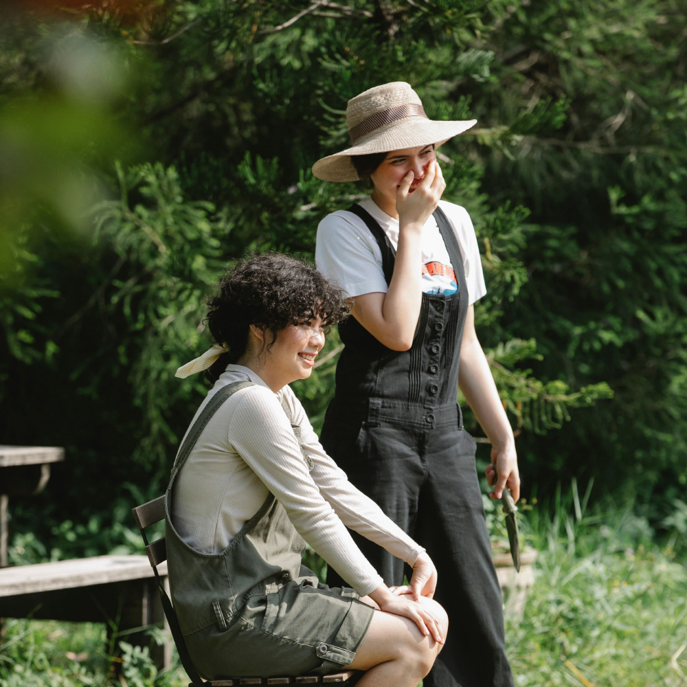

Vintage photography on iPhone
Give your iPhone photos an 1890s look.
A free camera era, a real before-and-after, and a few framing choices that keep the people in the picture.
For a vintage photo look on iPhone, start with the 1895 era in Nostalgia Camera. Select it before taking a picture, use the live preview to frame your subject, then shoot. This era is free; you do not need Pro or an account to use it.
I’m the developer, so this is a guide to my app rather than an independent review. Below, you can see exactly what the 1895 look does to one photograph before deciding whether you want it on your phone.


Contemporary photograph by Gary Barnes / Pexels, used under the Pexels License. The processed version comes from Nostalgia Camera’s rendering engine. It is not an original photograph from 1895 or a photo shot inside the app.
Drag the before-and-after demo ↗
How to take a vintage-style photo on iPhone
- Open Nostalgia Camera. Allow camera access when iOS asks so the app can show the live view.
- Open the era selector. Use the era selector on the camera screen to choose 1895 — Glass Plate.
- Find a face and a simple background. Start near a window or outside in open shade. Watch how clearly the face separates from its surroundings in the preview.
- Take two different compositions. Keep the era selected. Make one wider photo that includes the setting, then move a little closer for a second frame.
- Review the finished photos. Compare expressions and face detail, not just the strength of the effect. The app varies imperfections between captures, so the preview and each saved frame need not be identical.
The browser demo uses saved examples. To compose with a live camera view, use the iPhone app. You do not upload a photograph to this website.
What makes this look different from a simple sepia tint?
Look at the two examples above. The color photograph has bright green leaves and clear color differences between clothes. In the 1895 version, most of that color separation becomes differences in light and dark. Texture is visible across the picture, detail looks softer, and the outer areas are darker.
A brown tint alone would leave much of the original image’s sharp, clean character intact. Here the change is in color, detail and texture together. Those choices are visible in the example; they are not a promise to reproduce a particular historical camera or printing process.
Frame people, not just texture
Give the face enough light. If the face already looks lost in shadow in the preview, try turning toward a window or a brighter part of the sky. Adding an old-photo look will not recover an expression you cannot see.
Keep an eye on the background. In the example, the light shirt and the darker clothing make different shapes against the plants. For your own photo, move a step sideways if a face blends into a busy branch, shelf or patterned wall.
Leave one detail that says where you were. A picnic blanket, a chair or the edge of a table can keep a portrait connected to the afternoon. You do not need period clothing or a staged scene to try the look.
Let the expression happen. A conversation or a shared laugh gives you something to keep beyond the texture. Before sharing a recognizable portrait, ask the person in it.
Should you choose 1895, film or digicam?
“Vintage” can mean very different pictures. Compare these three directions in the interactive camera-look demo, using the same source photograph:
| Era | What to compare in the example | In the app |
|---|---|---|
| 1895 · Glass Plate | Warm monochrome, pronounced texture and soft detail. | Free |
| 1972 · Film | Warm color and a softer film-inspired rendering. | Optional Pro |
| 2004 · Digicam | Stronger color separation and a different digital-camera character. | Free |
If you want colorful snapshots rather than the older plate look, start with 2004. The six-frame digicam photo walk gives you a short shot list to try with it.
Before you download
Is the 1895 filter free?
Yes. The 1895 and 2004 eras are part of the free selection. Optional Nostalgia Camera Pro unlocks other eras and color options, including 1972. Check the app for the current local purchase prices.
Does it turn the iPhone into a real antique camera?
No. Your phone still uses its own camera. “1895” names a software look inspired by older photographs; it does not change the sensor, replace the lens or recreate a historical chemical process.
Can the website change my own photo?
No. The demo compares saved outputs from licensed photographs. It does not access your camera or accept uploads. The app’s live camera is where you compose and shoot your own pictures.
Do I need to sign up?
No account is required to shoot. Photo processing happens on your device. See the app privacy policy for details.
About these examples
The original and processed image use the same square crop. The processed file was rendered with Nostalgia Camera’s production engine, without an additional web filter or generative image edit. The examples illustrate the look; the randomized imperfections in a new capture may differ.
Photo sources and render details · App availability checked against the live 1.0.2 listing on 5 October 2026.